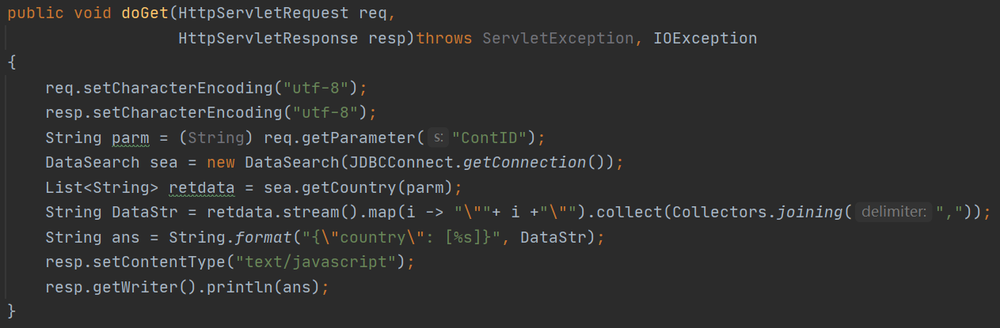
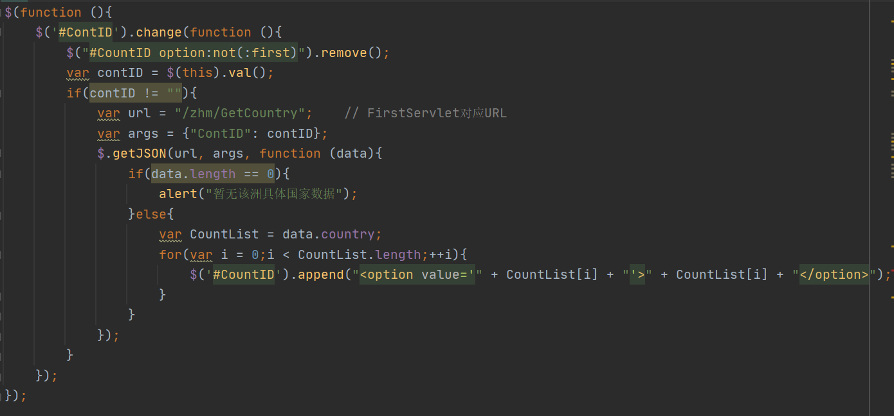

开发文档
技术栈
- HTML5
- CSS3
- JavaScript
- Ajax
- Java Servlet
- JSP
框架设计
后端设计
程序进入查询页访问:127.0.0.1/zhm/Search 进入查询,由一个Servlet接收该请求并查询数据库中存储的大洲名称,接着请求将转发至jsp页面

用户在查询页选择大洲后，通过Ajax构造请求地址:127.0.0.1/zhm/GetCountry 由一个Servlet接收该请求并查询数据库中对应大洲的国家名称后,返回json格式数据给jsp页面
用户在查询页选择大洲和国家后点击查询按钮,通过Ajax构造请求地址:127.0.0.1/zhm/servlet/GetData 由一个Servlet接收该请求并查询数据库中对应国家的数据后,返回json格式数据给jsp页面

数据库设计
数据库名称:CVoidData
数据表:
- Continent:存储大洲信息(大洲编号,大洲名称)
- Country:存储国家信息(国家编号,国家名称,所属大洲编号)
- InfectInfo:疫情信息(编号,时间,总感染人数,当日新增,死亡人数)

前端设计

用户访问查询页面后Servlet请求转发至jsp页面, jsp将大洲数据写入页面

通过ajax异步更新国家数据时,将原select框内容删除,并写入新的数据(json格式)
获取疫情数据后,写入新数据

More discussion
构造Json数据时,由于数据量小加上没找到简单易用的Json解析库,故采用手工生成json格式数据方式,若数据量大可使用Map+JsonObject(这个包我暂时没找到)方式生成
数据库设计时,将各查询语句设计为数据库函数更好
数据来源为随机生成数据,原定爬虫爬取方案因为个人技术原因失败了(主要在爬取国家数据后如何归入不同大洲时遇到问题)
Github:https://github.com/Zhm0715/Distributed-System/tree/main/HW1